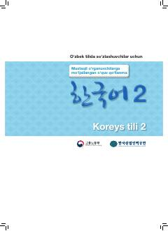

EOO'zbek tilida so'zlashuvchilar uchun EPS-TOPIK koreys tili o'quv qo'llanmasi.
Ushbu o'quv qo'llanma O'zbekistonda koreys tilini o'rganuvchilar va EPS-TOPIK imtihoniga tayyorlanayotganlar uchun mo'ljallangan bo'lib, o'zbek tilidagi tushuntirishlar va lug'atlar bilan boyitilgan. Kitobda kundalik muloqot mavzulari, grammatik qoidalar hamda o'zlashtirishni osonlashtiruvchi mashqlar berilgan.